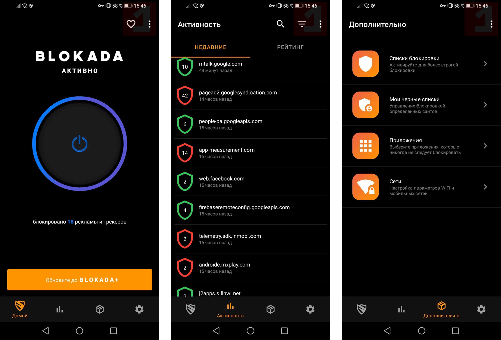

Данное изменение может стать источником проблем для некоторых приложений. Обновленная политика Google Play вступит в силу 1 ноября. В документе сообщается, что только приложения, использующие базовый класс Android VPNService и функционирующие в основном как VPN, могут открыть безопасный туннель на уровне устройства для удаленной службы. Однако, такие VPN-приложения не могут «манипулировать рекламой, которая может повлиять на монетизацию приложений». Данные ограничения предназначены для сдерживания VPN-сервисов, собирающих данные, а также для предотвращения мошенничества с рекламой. Согласно новым условиям, разработчики должны выполнить ряд требований:
Заявить об использовании VPNservice в списке своих приложений в Google Play
Шифровать данные, передаваемые с устройства на конечную точку VPN
Соблюдать политики программы для разработчиков, особенно те, которые касаются мошенничества с рекламой, разрешений и вредоносных программ.
Шведский разработчик VPN-приложения для блокировки рекламы Blokada для Android опасается, что это правило помешает, по крайней мере, предыдущей версии его продукта Blokada v5 и другого ПО, ориентированного на конфиденциальность.

Google утверждает, что борется с приложениями, которые используют службу VPN для отслеживания пользовательских данных или перенаправляют пользовательский трафик, чтобы зарабатывать с помощью рекламы.
Однако, эти изменения политики также применяются к приложениям, которые используют службу для локальной фильтрации трафика на устройстве.
Лабдауи предполагает, что новая версия Blokada v6, выпущенная в июне, не должна быть затронута, потому что она выполняет фильтрацию в облаке, не нарушая политики Google в отношении устройств. Но другим приложениям может не так повезти.
В качестве потенциальной жертвы новой политики Google Play, Лабдауи упоминает приватный браузер DuckDuckGo для Android, который создает локальную службу VPN, чтобы встроенная защита от отслеживания приложениями блокировала подключения к серверу отслеживания.
Представитель DuckDuckGo высказал свои сомнения по этому поводу:
"Мы не верим, что политика повлияет на нас, но наша команда продолжает ее изучать." - Представитель DuckDuckGo
Хотя правила Apple для VPN напрямую не касаются вмешательства в рекламу, вполне вероятно, что рекомендации для iOS оставляют достаточно места для интерпретации того, что Apple может запретить приложение iOS, которое мешает работе других приложений.
"Мы не разрешаем контент, который наносит вред или мешает работе сетей, серверов или другой инфраструктуры Google или любых третьих лиц." - Представитель Google
Google утверждает, что хочет позволить разработчикам «создавать более безопасные и более эффективные блокировщики рекламы», даже несмотря на то, что ожидаемый переход на Manifest v3 сделает такие расширения менее функциональными.